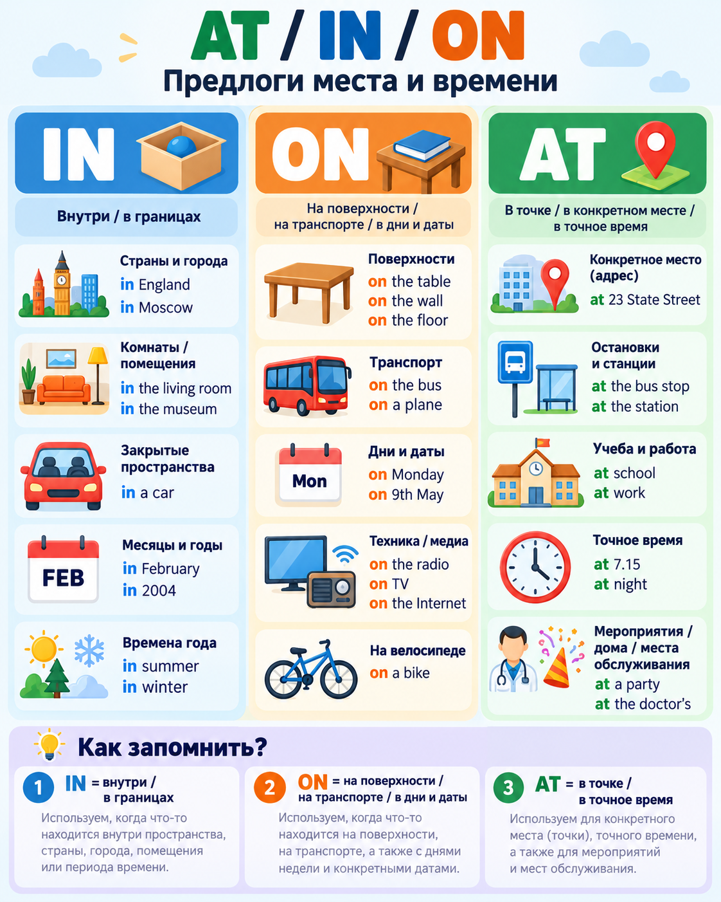

| 1 | 2 | 3 | 4 |
|---|---|---|---|
| Question word Where / What / When / How | Helper / be do / does / did / can / is / are / was / were | Subject you / she / your parents | Main verb + rest live? / work? / go? |
Where do you live?
Where were you born?
Can your friend drive?
Quick reference sheets for topics you have already studied
Главная схема для вопросов.
| 1 | 2 | 3 | 4 |
|---|---|---|---|
| Question word Where / What / When / How | Helper / be do / does / did / can / is / are / was / were | Subject you / she / your parents | Main verb + rest live? / work? / go? |
Where do you live?
Where were you born?
Can your friend drive?
Привычка и факт vs действие сейчас.
| Present Simple | Present Continuous | |
|---|---|---|
| Когда? | привычки, факты, регулярные действия | действие сейчас / временная ситуация |
| Утверждение | I work. / She works. | I am working. / She is working. |
| Отрицание | I don’t work. / She doesn’t work. | I’m not working. / She isn’t working. |
| Вопрос | Do you work? / Does she work? | Are you working? / Is she working? |
| Подсказки | usually, often, every day | now, at the moment, this week |
I work Monday to Friday. → обычная ситуация.
I’m working now. → действие происходит сейчас.
3rd person: work → works, watch → watches, study → studies. -ing: live → living, run → running.
Короткая формула для предложения помощи.
| Meaning | Form | Example |
|---|---|---|
| предлагаем помощь / решаем что-то сделать сейчас | I’ll + base verb | I’ll help you. / I’ll send somebody up. |
| отрицание | I won’t + base verb | I won’t forget. |
После will глагол остаётся в начальной форме: I’ll ask ✓, I’ll asks ✗.
Завершённые действия в прошлом.
| Form | Regular verb | Irregular verb |
|---|---|---|
| Positive | We arrived. | They went home. |
| Negative | They didn’t rent a car. → didn’t + base verb | |
| Question | Where did they go? → did + subject + base verb | |
| be | I was / You were · Was she...? · They weren’t... | |
Regular: ask → asked · invite → invited · study → studied · stop → stopped
Irregular: buy → bought · choose → chose · eat → ate · go → went
Место и время — визуальная памятка.

| IN | ON | AT |
|---|---|---|
| внутри / в границах | на поверхности / транспорт / дни | точка / конкретное место / точное время |
Действие было в процессе в определённый момент в прошлом.
| Form | Pattern | Example |
|---|---|---|
| Positive | subject + was / were + verb-ing | They were playing. |
| Negative | wasn’t / weren’t + verb-ing | It wasn’t raining. |
| Question | Was / Were + subject + verb-ing? | Were you working? |
| Short answer | Yes, ... was/were. / No, ... wasn’t/weren’t. | Yes, I was. |
Long action in progress → Past Continuous
Short event → Past Simple
Mark was talking on the phone when he got a text.
I was writing a report when my computer crashed.
-ing: work → working · write → writing · get → getting.
Порядок событий, причина, результат и контраст.
| Функция | Слова | Пример |
|---|---|---|
| Sequence | One summer · The next day · Two minutes later · After that · Suddenly | After that, we travelled together. |
| Reason | because | I went home because I was tired. |
| Result | so | I was tired, so I went home. |
| Contrast | but · although | Although it was expensive, I bought it. |
| Time link | when | I was tired when I reached the top. |
because gives the reason; so gives the result.
but joins two contrasting ideas; although introduces the “although ...” clause.
Avoid: Because ..., so ... ✗ and Although ..., but ... ✗ for the same logical link.